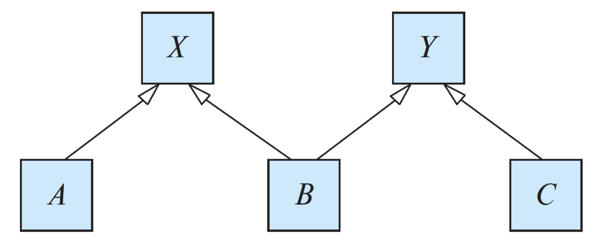

学号：23336128
姓名：梁力航
弱实体集和强实体集的根本区别在于它们是否能够独立存在。强实体集拥有自己的主键，可以通过自身的属性来唯一标识每个实体，不依赖于其他实体集。而弱实体集则不同，它没有足够的属性来形成主键，必须依赖于另一个实体集（称为标识实体集或所有者实体集）才能唯一标识自己的实体。
从存在依赖的角度来看，弱实体集的存在完全依赖于其标识实体集。如果标识实体集中的某个实体被删除，那么所有依赖于它的弱实体也必须被删除。这种依赖关系在数据库设计中通常通过外键约束和级联删除来实现。相比之下，强实体集是独立的，它的存在不依赖于任何其他实体集。
在标识方式上，弱实体集需要使用分辨符（discriminator）或部分键（partial key）与标识实体集的主键组合起来，才能唯一标识一个实体。比如在一个订单系统中，订单项（order_item）就是一个弱实体集，它需要订单号（来自订单实体）加上自己的项目编号才能唯一标识。而强实体集如订单（order）本身就有订单号作为主键，不需要借助其他实体的属性。
在E-R图的表示上，两者也有明显的区别。强实体集用单线矩形表示，而弱实体集用双线矩形表示。连接弱实体集和标识实体集的关系用双线菱形表示，这种关系称为标识性关系。弱实体集的分辨符属性用虚下划线标注，而强实体集的主键用实下划线标注。
将弱实体集转换为强实体集时，虽然可以让它获得独立性，但确实会引入一些冗余问题。最直接的冗余就是数据的重复存储。原本弱实体集通过外键关系隐式地与标识实体集关联，现在需要将标识实体集的主键作为属性直接存储在弱实体集中。这意味着标识实体集的主键值会在多个弱实体记录中重复出现。
举个具体的例子，假设我们有一个课程（course）实体集和一个课程章节（section）弱实体集。原本section只需要一个章节号（section_number）作为分辨符，配合course的主键course_id就能唯一标识。如果要把section转换为强实体集，就需要在section中添加course_id作为属性。这样一来，同一门课程的所有章节都会重复存储这个course_id，造成数据冗余。
这种冗余还会带来更新异常的风险。如果标识实体集的主键发生变化（虽然这种情况比较少见），就需要同时更新所有相关的弱实体记录。如果更新不完全或不一致，就会导致数据不一致的问题。而在原来的弱实体集设计中，由于是通过关系连接的，只需要更新一处就可以了。
另外，这种转换还可能导致语义上的模糊。原本弱实体集的设计清楚地表达了"这个实体依赖于另一个实体而存在"的语义，转换后这种依赖关系变得不那么明显了。虽然可以通过外键约束来维护这种关系，但在概念模型层面，这种存在依赖的语义被削弱了。
超码、候选码和主码这三个概念是层层递进的关系。超码（superkey）是最宽泛的概念，它是一个或多个属性的集合，能够唯一标识关系中的每一个元组。换句话说，在超码的属性集合中，不会有两个元组具有完全相同的值。但超码可能包含一些冗余的属性，也就是说，即使去掉某些属性，剩下的属性仍然能够唯一标识元组。
候选码（candidate key）是在超码的基础上进一步精简得到的。它是最小的超码，也就是说，候选码中的任何属性都不能被去掉，否则就失去了唯一标识的能力。一个关系可能有多个候选码，它们都具有唯一标识元组的能力，而且都是最小的。比如在一个学生表中，学号可以是一个候选码，身份证号也可以是另一个候选码，它们都能唯一标识学生，而且都是最小的。
主码（primary key）则是从多个候选码中选择出来的一个，作为主要的标识方式。选择哪个候选码作为主码通常基于实际应用的需求，比如考虑哪个更稳定、更简洁、更常用等因素。一旦选定了主码，它就成为了这个关系的主要标识符，在数据库实现中会被特殊对待，比如自动创建索引、不允许NULL值等。
用一个简单的例子来说明：假设有一个学生表，包含学号、身份证号、姓名、年龄等属性。{学号, 姓名, 年龄}是一个超码，因为它能唯一标识学生，但它不是候选码，因为去掉姓名和年龄后，单独的学号仍然能唯一标识学生。{学号}和{身份证号}都是候选码，因为它们都是最小的超码。如果我们选择学号作为主要的标识方式，那么{学号}就成为了主码。
在设计医院的E-R图时，我们需要考虑几个核心实体和它们之间的关系。首先是患者（Patient）实体，它包含患者的基本信息，比如患者ID作为主键，还有姓名、性别、出生日期、联系电话、地址等属性。患者ID是唯一标识每个患者的关键。
医生（Doctor）实体包含医生的基本信息，包括医生ID作为主键，姓名、专业科室、职称、联系方式等属性。医生ID用来唯一标识每位医生。
对于测试和检查的日志，我们设计了测试记录（Test_Record）实体。这个实体包含记录ID作为主键，测试类型、测试日期、测试结果、备注等属性。每个测试记录通过外键关联到患者和开具该测试的医生。
患者和医生之间存在"就诊"（consults）关系。这是一个多对多的关系，因为一个患者可以看多个医生，一个医生也可以接诊多个患者。这个关系包含一些属性，比如就诊日期、诊断结果、处方等。
患者和测试记录之间是一对多的关系（has），一个患者可以有多个测试记录，但每个测试记录只属于一个患者。医生和测试记录之间也是一对多的关系（orders），表示哪位医生为患者开具了哪些检查。

这个格结构展示了一个多重继承的层次关系。从图中可以看到，X和Y是两个较高层次的实体集，它们可能代表某些通用的概念或抽象类。A、B、C是较低层次的实体集，代表更具体的概念或子类。在这个结构中，属性继承遵循从上到下的传递规则。
对于A实体集，它只从X继承，这是一个简单的单继承关系。A会继承X的所有属性和特征，同时可以有自己特有的属性。这种情况比较直接，不会产生任何冲突。同样，C实体集只从Y继承，也是单继承关系，C会拥有Y的所有属性加上自己定义的属性。
B实体集的情况就比较复杂了，因为它同时从X和Y继承。在没有命名冲突的情况下，B会拥有X的所有属性、Y的所有属性，以及B自己定义的属性。这意味着B的属性集是X、Y和B自身属性的并集。这种多重继承使得B具有两个父实体集的特征，能够更灵活地表达现实世界中复杂的分类关系。比如在一个大学系统中，X可能代表"人员"，Y可能代表"学术成员"，那么B可能是"助教"，既是人员又是学术成员。
当X和Y有同名属性时，就会产生命名冲突问题。处理这种冲突有几种常见的方法。第一种是要求这两个同名属性必须具有相同的域和语义，这样它们实际上代表同一个概念，B只需要继承一份就可以了。这种情况下，同名属性会被合并，B只有一个这样的属性。这种处理方式适用于那些在不同父实体中确实表示相同含义的属性。
第二种方法是使用属性重命名。如果X和Y的同名属性实际上代表不同的概念，那么在B中需要对它们进行区分。可以通过添加前缀或后缀来重命名，比如X的属性"address"在B中变成"X_address"，Y的属性"address"变成"Y_address"。这样B就可以同时保留两个属性，避免混淆。这种方法虽然增加了属性名的复杂度，但能够完整保留两个父实体的信息。
第三种方法是让B显式地选择继承哪一个。在某些数据库设计中，可以在B的定义中明确指定，当遇到同名属性时，优先使用X的版本或Y的版本。这种方法需要设计者仔细考虑业务逻辑，选择最合适的属性来源。选择的依据可能是哪个属性更重要、更常用，或者更符合B的实际语义。
在实际的数据库实现中，多重继承的命名冲突问题往往通过设计规范来避免。比如在设计阶段就确保不同的实体集使用不同的属性名，或者在必要时使用命名空间来区分。有些数据库系统甚至不支持多重继承，就是为了避免这类复杂的冲突问题。不过在面向对象的数据库或者支持继承的关系数据库中，这些冲突处理机制是必不可少的。